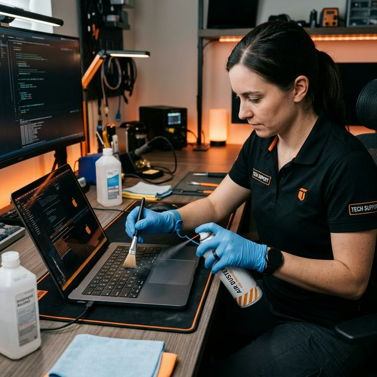
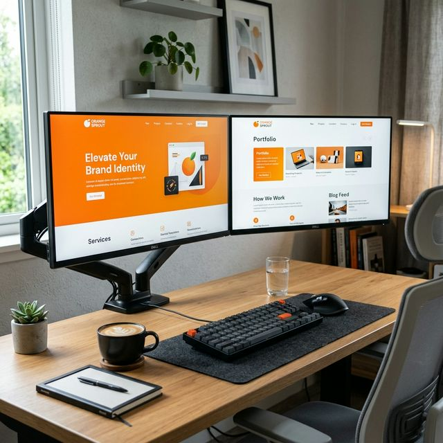
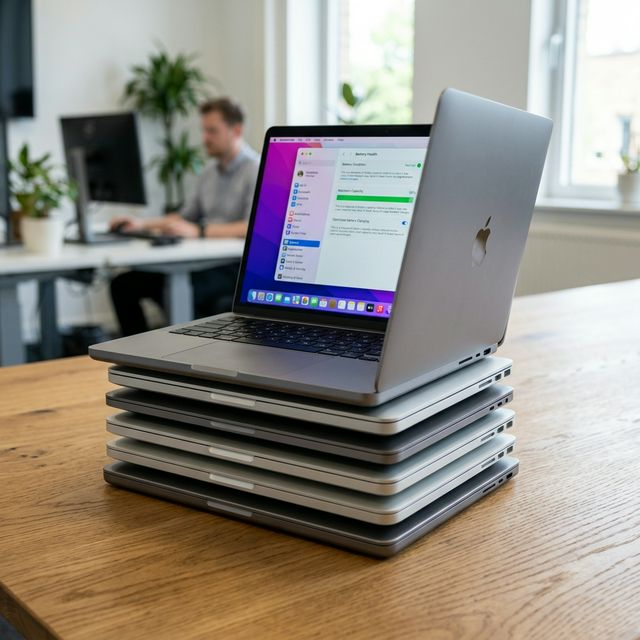

Guides
Speed Up Your Windows PC
A few simple software tweaks to make your old Windows setup feel snapier than ever before.
Read Full Post ↗Industry Expert Tips · Bhuj · Since 1993
Stay updated with the latest in IT maintenance, CCTV security tips, and small business digital growth strategies curated by our experts here in Bhuj.
Easy Tips · Quick Read
Is your laptop running slow? Don't worry, you don't always need a new one! Here are 3 simple things you can do today:

A few simple software tweaks to make your old Windows setup feel snapier than ever before.
Read Full Post ↗Learn how modern surveillance systems protect shops and homes against modern threats.
Read Full Post ↗
How a simple website can help your business in Kutch reach more local customers effectively.
Read Full Post ↗
Comparing the best value-for-money MacBooks for students and small business owners in Bhuj.
Read Full Post ↗Join our monthly newsletter for the best updates from the computer world.